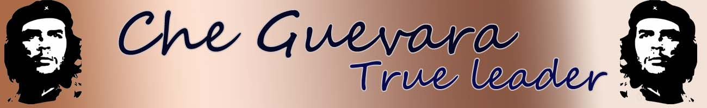
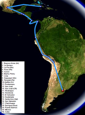

|  |
Erly Political ActivityActivism in GuatemalaMain article: 1954 Guatemalan coup d'état  Ernesto Guevara spent just over nine months in Guatemala. On 7 July 1953, Guevara set out again, this time to Bolivia, Peru, Ecuador, Panama, Costa Rica, Nicaragua, Honduras, and El Salvador. On 10 December 1953, before leaving for Guatemala, Guevara sent an update to his aunt Beatriz from San José, Costa Rica. In the letter Guevara speaks of traversing the dominion of the United Fruit Company, a journey which convinced him that the company's capitalist system was disadvantageous to the average citizen. He adopted an aggressive tone to frighten his more conservative relatives, and the letter ends with Guevara swearing on an image of the then-recently deceased Joseph Stalin, not to rest until these "octopuses have been vanquished". Later that month, Guevara arrived in Guatemala, where President Jacobo Árbenz headed a democratically elected government that, through land reform and other initiatives, was attempting to end the latifundia agricultural system. To accomplish this, President Árbenz had enacted a major land reform program, where all uncultivated portions of large land holdings were to be appropriated and redistributed to landless peasants. The largest land owner, and the one most affected by the reforms, was the United Fruit Company, from which the Árbenz government had already taken more than 225,000 acres (91,000 ha) of uncultivated land. Pleased with the direction in which the nation was heading, Guevara decided to make his home in Guatemala to "perfect himself and accomplish whatever may be necessary in order to become a true revolutionary. A map of Che Guevara's travels between 1953 and 1956, including his journey aboard the Granma In Guatemala City, Guevara sought out Hilda Gadea Acosta, a Peruvian economist who was politically well-connected as a member of the left-leaning, Alianza Popular Revolucionaria Americana (APRA). She introduced Guevara to a number of high-level officials in the Árbenz government. Guevara then established contact with a group of Cuban exiles linked to Fidel Castro through the 26 July 1953 attack on the Moncada Barracks in Santiago de Cuba. During this period, he acquired his famous nickname, due to his frequent use of the Argentine filler expression che (a multi-purpose discourse marker, like the syllable "eh" in Canadian English). During his time in Guatemala, Guevara was hosted by other Central American exiles, one of whom, Helena Leiva de Holst, provided him with food and lodging,discussed her travels to study Marxism in Russia and China,and to whom Guevara dedicated a poem, "Invitación al camino". In May 1954, a ship carrying infantry and light artillery weapons was dispatched by communist Czechoslovakia for the Árbenz government and arrived in Puerto Barrios. As a result, the United States government—which since 1953 had been tasked by President Eisenhower to remove Árbenz from power in the multifaceted CIA operation code-named PBSuccess—responded by saturating Guatemala with anti-Árbenz propaganda through radio and air-dropped leaflets, and began bombing raids using unmarked airplanes. The United States also sponsored an armed force of several hundred anti-Árbenz Guatemalan refugees and mercenaries headed by Carlos Castillo Armas to help remove the Árbenz government. On 27 June, Árbenz chose to resign. This allowed Armas and his CIA-assisted forces to march into Guatemala City and establish a military junta, which elected Armas as president on 7 July. The Armas regime then consolidated power by rounding up and executing suspected communists, while crushing the previously flourishing labor unions and reversing the previous agrarian reforms. Guevara was eager to fight on behalf of Árbenz, and joined an armed militia organized by the communist youth for that purpose. However, frustrated with that group's inaction, Guevara soon returned to medical duties. Following the coup, he again volunteered to fight, but soon after, Árbenz took refuge in the Mexican embassy and told his foreign supporters to leave the country. Guevara's repeated calls to resist were noted by supporters of the coup, and he was marked for murder.After Gadea was arrested, Guevara sought protection inside the Argentine consulate, where he remained until he received a safe-conduct pass some weeks later and made his way to Mexico. The overthrow of the Árbenz regime and establishment of the right-wing Armas dictatorship cemented Guevara's view of the United States as an imperialist power that opposed and attempted to destroy any government that sought to redress the socioeconomic inequality endemic to Latin America and other developing countries. . |